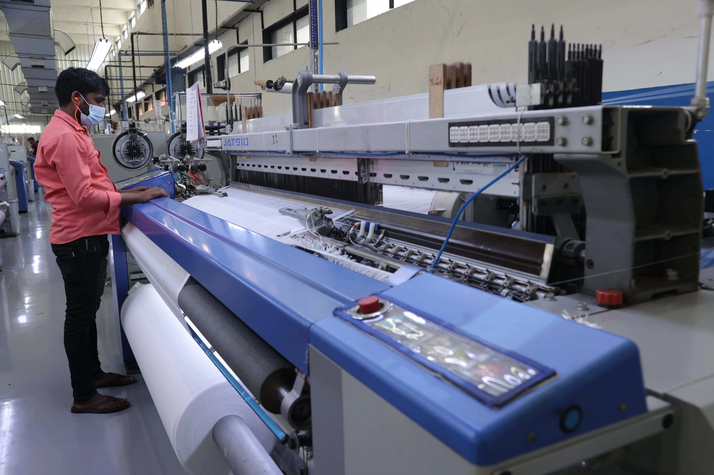

Our Capabilities
End-to-end textile capabilities.
Under one roof.
Weaving
High-efficiency shuttleless looms configured for lightweight to heavy woven fabrics, dobbies, chambrays, and structured weaves with uniform tension and clean selvedges.
.jpg)
Knitting
Precision circular and warp knitting machinery engineered to produce high-recovery, breathable jersey, ribs, interlocks, and specialty knit constructions with consistent drape.

Digital Printing
High-definition digital printing systems offering photographic clarity, intricate multi-color gradients, and rapid strike-off sampling with zero water-waste ink technologies.


Embroideries
Multi-head computerized embroidery setups capable of fine filigree patterns, sequence application, schiffli techniques, and decorative surface embellishments on wovens and knits.
Foil Printing
Controlled heat-transfer and direct foil application delivering durable metallic, matte, and iridescent finishes that withstand commercial laundering and garment processing.

Yarns
In-house draw texturising, twisting, and air-covering lines converting conventional and recycled polyester polymers into engineered yarns customized for specific hand-feel and strength.
Processing
Continuous washing, scouring, soft-flow dyeing, heat-setting stenters, and specialty chemical finishes ensuring exact shade-matching, dimensional stability, and soft hand-feel.